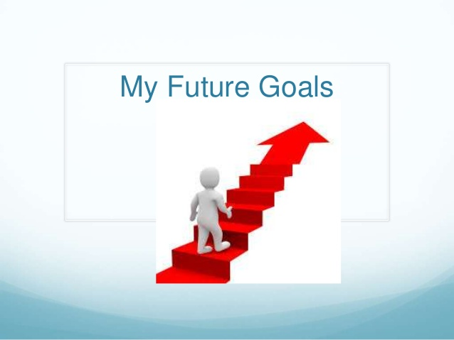

My future goals
October 7, 2026 by Shahine Wisdom

One of my main goals is to become a successful entrepreneur and build businesses that can create opportunities for myself and others. I am currently working toward becoming a cart owner for the Bad Dog stand from CB Group, which would give me valuable experience in managing a business, serving customers, and understanding day-to-day business operations. I hope to eventually expand into other business ventures and use the knowledge and experience I gain to build successful and sustainable businesses.
Another important goal of mine is to become a successful web developer. I want to develop strong skills in HTML, CSS, JavaScript, and other web technologies so that I can create websites that are useful, modern, and easy to use. I am interested in learning how websites are designed and developed, and I hope to eventually create websites and applications for businesses and individuals. In the future, I would like to combine my skills in technology and entrepreneurship by creating my own digital products and using web development to help grow my businesses.